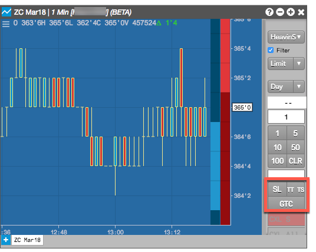
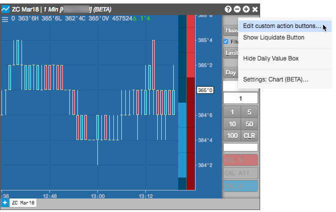
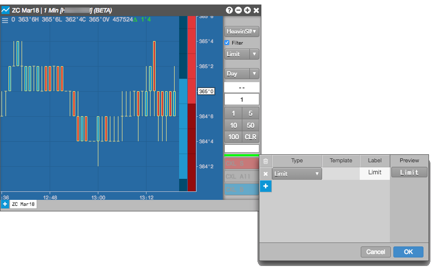
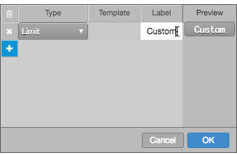
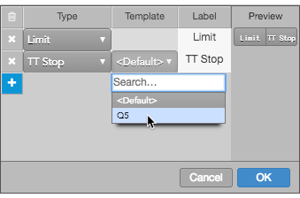
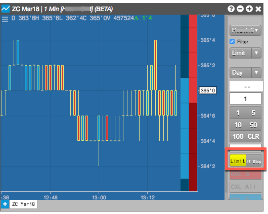

If you frequently use one or more order types or TIF (time-in-force) order settings, you can add buttons to the order pane that automatically set the order type or TIF in place of selecting it from the order type drop-down. You can add buttons for:
- Exchange order types
- TT order types
- User-defined Order Ticket Algos
- User-defined Synthetic Order Algos
- Time-in-Force (TIF)
For example, if you frequently submit Stop Limit orders and TT Time Sliced orders and use a Good-Til-Cancel TIF, you can add custom action buttons as shown below.

Custom button actions can be added added from the order pane's context menu or from Trading section in the the Charts settings.
To add a custom action button:
-
Right-click in the order pane and select Edit custom action buttons from the context menu.

-
Click "+" and click the drop-down arrow in the Type field to select an order type or TIF.

-
Click the Label field to customize the button name. Check the Preview column to verify how the title will appear on the button in order pane.

-
If you have created order templates for a TT Order Type or custom algo, you can select the template to assign to the button. When the button is clicked, the order will automatically use the values defined in the template, and will not display the fly-out.

-
Click OK.
The custom buttons appears in the order pane.
